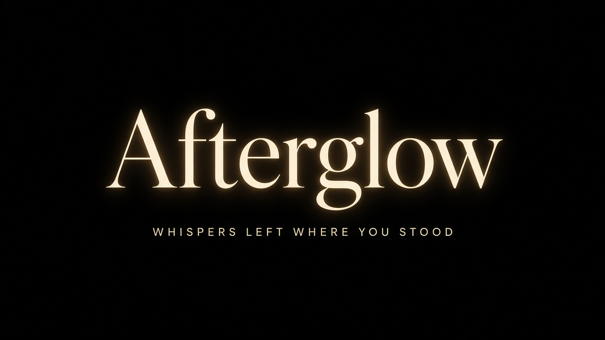

GPS trigger
You leave. GPS drops a pin. The pin is precise. No live “who’s here.”
Sold by 28to3.me · Free · Android / Play first

Whispers left where you stood.
GPS drops a precise pin when you leave. Inside ~50ft / 15m you hear the whispers — residue ranked by plays, never a rating of the place. Not reviews. No feed. Then move on. Free. Android and Play first. iOS later.
Free. No Stripe. GPS trigger. Pin is precise. Listen radius ~50ft / 15m. Rank residue by plays — never rate the place. Not reviews. No Yelp, likes, or comments. Play listing next — iOS later. Source: Sofa-Loaf/afterglow. Meeting demo: web prototype.

What it is
Not a social app. Not a review site. Afterglow is a field recorder. GPS triggers the ask. The pin is precise. Step inside ~50ft / 15m to hear residue. Ranked by plays — never a rating of the place. Phone first: Android and Play now, iOS later.
You leave. GPS drops a pin. The pin is precise. No live “who’s here.”
Listen radius is about fifty feet — fifteen meters. Inside, whispers. Outside, quiet. The radius is the access gate, not a blur on the pin.
When a landmark gathers residue, plays will rank the whispers. Never rate the place. Not reviews. No stars, likes, or comments.
Privacy
Afterglow asks for sensors only to leave a whisper or stand at a pin. There is no account. Nothing here is a social graph. Play Data safety matches this page.
GPS is the trigger. The pin is precise — exact lat/lng, not a neighborhood blob. Listening is gated to ~50ft / 15m of that pin. Foreground only in v0. No background location. No live map of people.
Only when you start an 8–12 second voice note. If you never record, the mic stays off. The take is a whisper at the pin, then it expires.
Only for a still you choose. A face is not required. If you never take a photo, the camera stays off.
Site-wide policy: privacy.html. In-repo source: docs/PRIVACY.md on Sofa-Loaf/afterglow.
Get it from 28to3.me
No Payment Link. No invented checkout. Afterglow is free. Source and builds live on GitHub. Play listing is next. iOS later. Seller is still 28to3.me.
$0
Android / Play first — iOS later. No Stripe.
This page lives at apps/afterglow.html on 28to3.me. Brand assets: apps/assets/afterglow/. Web prototype: apps/afterglow-demo.html. Expo sits underneath — you do not need it to use the app.
Minute Cheat Sheet and Actionscope stay as they are
Also from 28to3.me
Afterglow does not touch Stripe. The $49 Minute Teardown booking fee and the $0.99 Minute Cheat Sheet stay live.